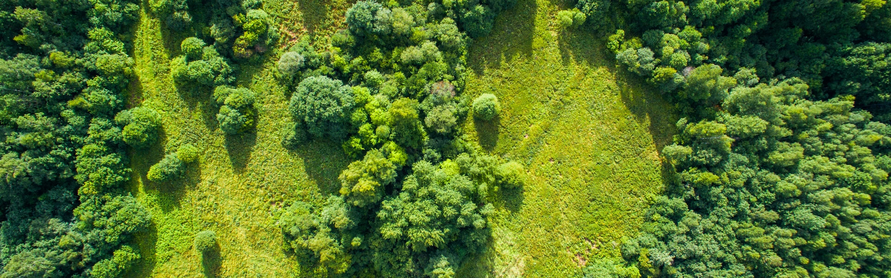

Life on Land
Protect, restore, and promote sustainable use of terrestrial ecosystems, manage forests sustainably, combat desertification, and halt and reverse land degradation and halt biodiversity loss.
What should we do
- Ecosystem restoration & protection
- Sustainable forest management
- Combating desertification & land degradation
- Biodiversity conservation & poaching prevention
Protect, restore, and sustainably manage terrestrial and freshwater ecosystems to prevent habitat loss and enhance biodiversity.

Halt deforestation, restore degraded forests, and significantly increase afforestation and reforestation to maintain ecosystem services.

>Implement land rehabilitation practices, promote sustainable agriculture, and combat desertification to restore degraded soil and prevent further degradation.
Reduce threats to endangered species, combat wildlife poaching and trafficking, and integrate biodiversity values into national and local planning.
💡 Why choose this global goal? Degraded land doesn't just lose trees — it drives poverty, migration, conflict, and animal extinction, and restoring it is a solution we already know how to do.